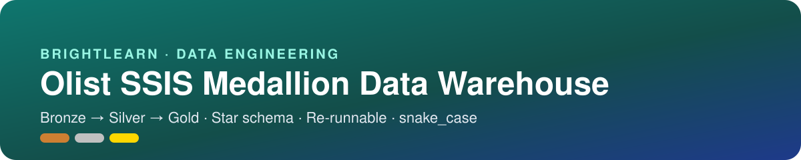

You are a data engineer at Olist, a Brazilian online marketplace. Small sellers list products, customers buy, and sellers ship the orders. The business has nine raw CSV extracts (about 100,000 orders, 2016–2018) and no data warehouse. Reports are slow, numbers disagree, and nobody can answer basic questions reliably.
data/raw/ only.What must be true by the end of each week.
00_master.dtsx runs end to end, and the re-run test passes.drawio and .png) and 3+ Mermaid diagrams